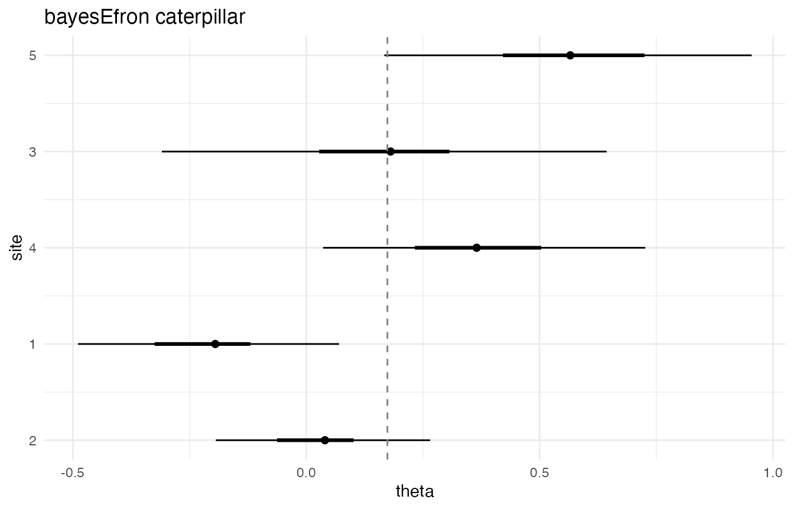
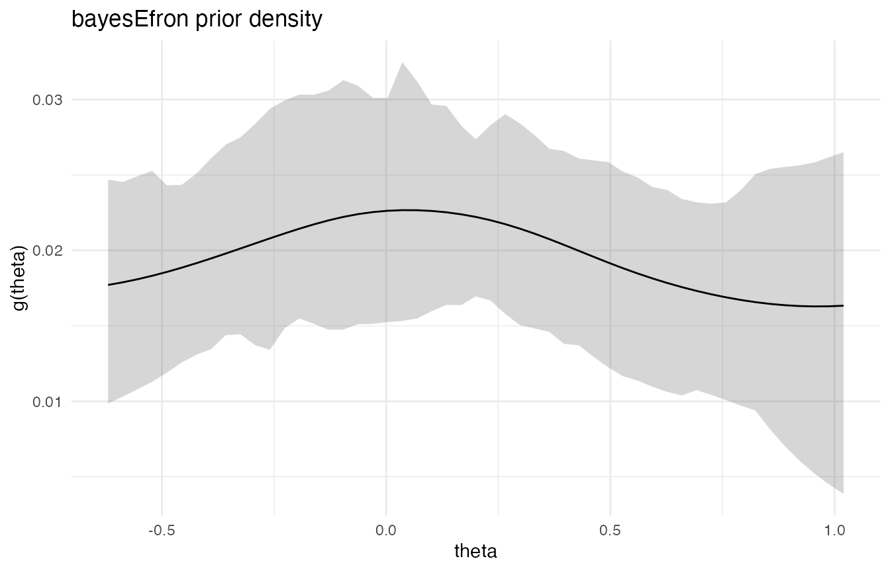
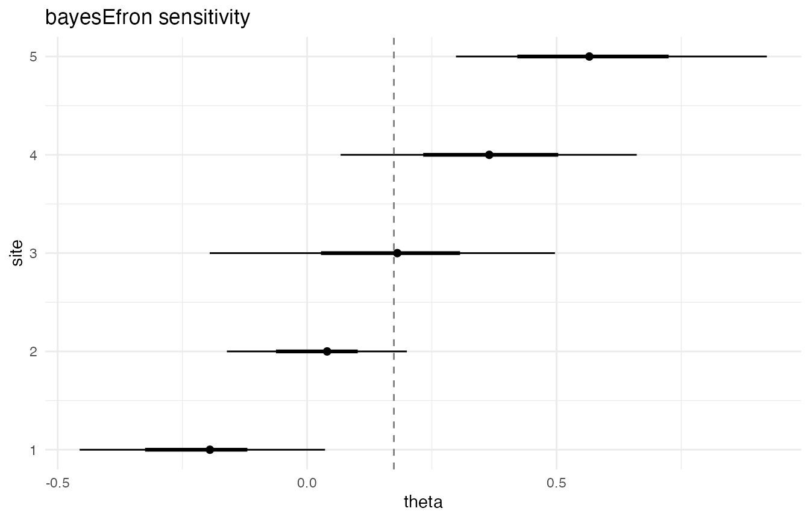
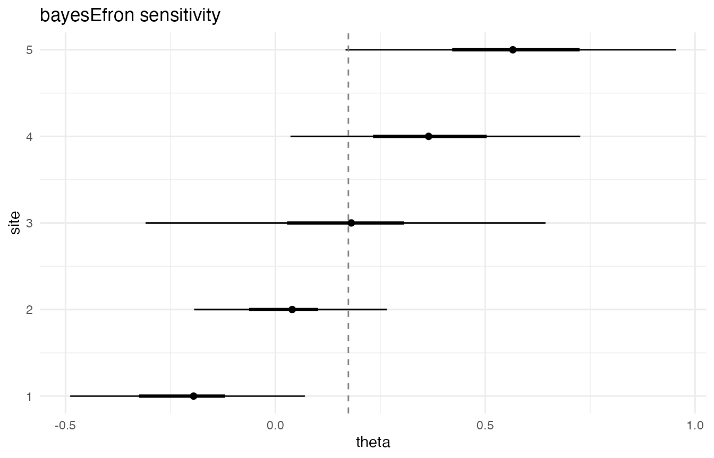
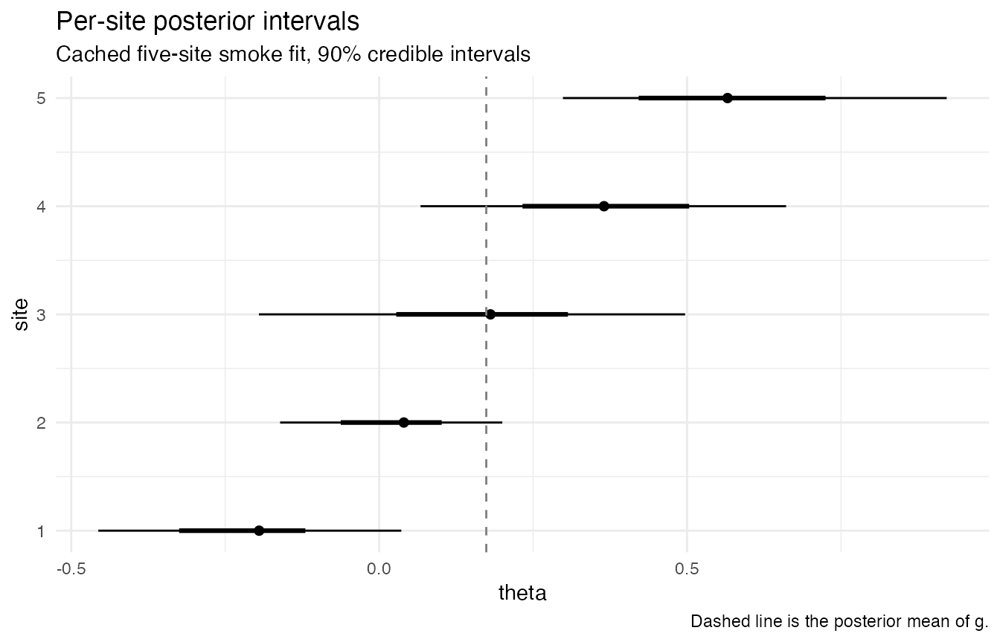

A6 · Plotting and visualization
Source:vignettes/a6-plotting-and-visualization.Rmd
a6-plotting-and-visualization.RmdFour views, four questions
plot.bef_fit_re() is the package’s graphical surface. A
single S3 method dispatches on a type argument to one of
four views, each tuned to a question a meta-analyst routinely asks of a
deconvolution fit:
type |
Question answered |
|---|---|
"caterpillar" |
Where do the per-site posterior means sit relative to one another, and how wide are their credible intervals? |
"g" |
What does the underlying mixing distribution look like, with uncertainty? |
"sensitivity" |
How much does the per-site interval width move when the credible level is changed? |
"diagnostic" |
Is the sampler healthy enough for the headline summaries to be trusted? |
The four views read from the same fit object — there is no re-fitting
and no auxiliary data load. The caterpillar and sensitivity views
consume the per-site posterior draws stored in
fit$metadata$theta_rep_draws; the prior-summary view reads
the discretised
draws in fit$draws; the diagnostic view consumes the same
payload that diagnose() and summary() consume,
producing a bar-chart triage view of the sampler-health fields.
The cached five-site smoke fit loaded in the setup chunk is the
fixture used throughout. It was sampled deliberately small (one chain,
100 sampling iterations) and so exhibits diagnostic failures that the
type = "diagnostic" view makes immediately visible; see
A5 for the numeric thresholds and remediation recipe.
All four chunks below render against this fixture, so the visual output
a reader sees is exactly what the documented call produces.
type = "caterpillar"
The caterpillar plot is the canonical per-site posterior view. For
each site
the plot draws a horizontal segment spanning the credible interval at
the requested level, an inner heavier segment spanning the
central 50% interval (the inter-quartile range from the posterior
draws), and a filled point at the posterior mean. A dashed vertical
reference line marks the posterior mean of
— the population-level prior mean. The plot shows posterior means and
intervals plus the population reference line; raw
values are not drawn in the v0.1 plot method.
plot(fit, type = "caterpillar")
The sort_by argument controls the row ordering. The
default, sort_by = "mean", orders sites by posterior mean
(ascending from bottom). sort_by = "sigma" orders by
within-study standard error
,
which makes the relationship between
and interval width directly readable: sites with the largest
have the longest segments. sort_by = "none" preserves input
order, which is useful when sites carry an analyst-meaningful identifier
(a state code, a cohort year) that the analyst wants on the vertical
axis in source order.
plot(fit, type = "caterpillar", sort_by = "sigma", level = 0.95)
The level argument controls the outer interval; the
inner heavier segment is fixed at the 25th–75th percentile range. The
plot above uses level = 0.95, widening the outer segments
relative to the default 90% intervals shown in the first plot.
type = "g"
The prior-summary view shows the posterior estimate of the mixing
distribution
— the population distribution of latent site effects. When the draws
object carries the discretised
fields (g[1] through g[L], with
the grid resolution), the view draws the posterior mean of
on the grid as a solid line with a credible band at the requested
level. When those fields are not stored, the view falls
back to a marginal interval plot of the prior moments through
confint(x, type = "g").
plot(fit, type = "g")
For tabular use the same population-level summary lives in
fit$metadata: mean_g_summary and
var_g_summary are named fields, while
sd_g_summary is stored as a durable attribute of
fit$metadata. All three carry the posterior mean, standard
deviation, and conventional quantile summaries of the prior mean, prior
variance, and prior standard deviation respectively. The dashed
reference line in the caterpillar view above is the
mean_g_summary$mean entry. A2 documents
the metadata block in full.
type = "sensitivity"
The sensitivity view is a caterpillar plot at a non-default credible level, rendered with the title “bayesEfron sensitivity” to distinguish it from the standard caterpillar. Side-by-side inspection of the two views answers a single question: how much does the per-site interval width move as the credible level moves? For posteriors that are approximately Gaussian on the latent scale, the move from 90% to 95% widens each interval by a factor of roughly . Departures from that ratio are diagnostic of either tail asymmetry or sparse posterior sampling in the interval endpoints.
plot(fit, type = "sensitivity")
plot(fit, type = "sensitivity", level = 0.95)
The two plots share the same posterior means and inner inter-quartile segments; only the outer segments move. The cached fixture’s intervals are very wide in absolute terms — a consequence of the smoke-scale iteration count rather than the credible-level choice — so the relative widening is the comparison to focus on.
type = "diagnostic"
The diagnostic view is a bar chart of the five sampler-health metrics
that diagnose(fit) and
summary(fit)$diagnostics produce in numeric form:
,
bulk ESS, tail ESS, divergence count, and max-treedepth-saturation
count. It is a companion to the numeric view rather than a replacement
for it; A5 walks through each metric, its release
threshold, and the remediation recipe when the threshold is missed.
plot(fit, type = "diagnostic")
On the cached fixture the bulk and tail ESS bars dominate the vertical scale — the visual signature of a smoke-scale fit where ESS is the information-bearing diagnostic and the one that scales fastest with iteration count.
Backends
plot.bef_fit_re() ships two backends. The
ggplot2 backend is used when ggplot2 is
installed and the environment variable
BAYESEFRON_NO_GGPLOT2 is not exactly "1"; it
returns a ggplot2::ggplot object visibly, so the object can
be assigned and extended with layered grammar. The base-graphics backend
is used otherwise; it draws on the active graphics device and returns
invisible(NULL). The two backends produce visually similar
output but are not pixel-identical: the base backend uses
graphics::segments() and graphics::points()
with package defaults, the ggplot2 backend layers
geom_segment(), geom_point(), and
geom_vline() on a theme_minimal() base.
Forcing the base backend is a one-line operation:
Sys.setenv(BAYESEFRON_NO_GGPLOT2 = "1")
plot(fit, type = "caterpillar")
Sys.unsetenv("BAYESEFRON_NO_GGPLOT2")Downstream code that chains ggplot2 layers should guard
against the base path with inherits(p, "ggplot"). The guard
is cheap and keeps the calling code working in either backend
regime:
p <- plot(fit, type = "caterpillar")
if (inherits(p, "ggplot")) {
p +
theme_minimal() +
labs(
title = "Per-site posterior intervals",
subtitle = "Cached five-site smoke fit, 90% credible intervals",
caption = "Dashed line is the posterior mean of g."
)
}
The chained call returns a fully customised ggplot
object that behaves like any other; further + scale_*(),
+ facet_*(), and + coord_*() layers compose as
expected. The attr(p, "bef_plot_payload") attribute carries
the data the view consumed, which is occasionally useful when extending
the view with a layer that needs the same numeric inputs.
What’s next
- A7 · Case study — Lee–Sui replication light — an end-to-end worked analysis on a real multisite dataset, exercising the four views in their substantive roles.
-
M2 · Efron’s log-spline prior — the methodological
vignette documenting the prior
that the
type = "g"view visualises, including the role of the spline degrees of freedom and the discretisation grid . - M3 · Bayesian random-effects hierarchy — the formal write-up of the / hierarchy whose two layers the caterpillar and prior- views display.